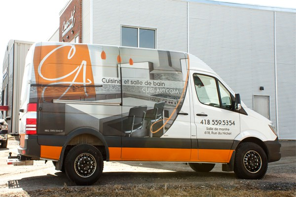
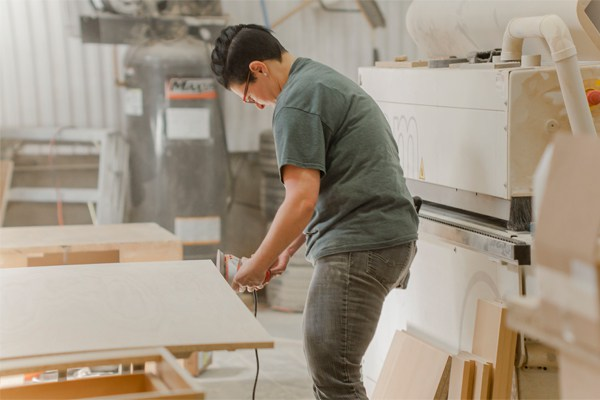
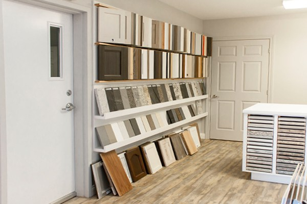
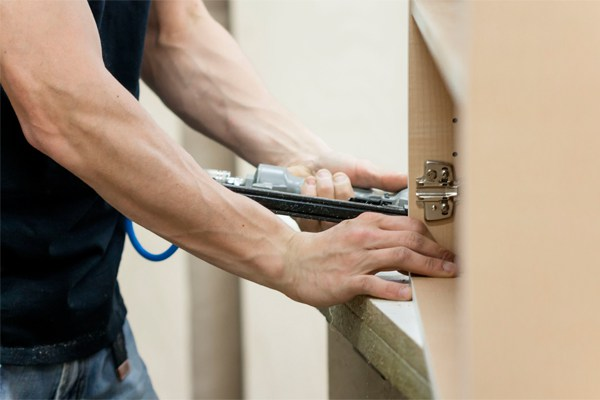

La première rencontre peut se faire à votre domicile. Elle nous permet de vous faire une soumission plus précise. Nous pouvons aussi vous rencontrer sur rendez-vous à notre salle de montre située dans le parc industriel de Charlesbourg. Cela permet d’avoir un premier contact et de vous présenter notre portfolio ainsi que nos nombreux produits.
Le premier rendez-vous à domicile est un service gratuit qui nous permet de mieux cerner vos besoins ainsi que les contraintes du projet. Ainsi, nous pourrons vous remettre une meilleure soumission.
Notre entreprise s’adresse à tous les types de travaux en matière de fabrication d’armoires. Nous sommes spécialisés dans les cuisines et les salles de bain. Aussi, nous offrons le service de confection de mobilier sur mesure. Maisons existantes ou nouvelles constructions, nous savons y faire.
Nous offrons une belle variété dans le choix de matériaux en ce qui concerne vos nouvelles armoires. D’ailleurs, nous avons divers panneaux d’armoires que nous pouvons vous prêter afin de prendre la bonne décision. Nous possédons entres autres, des modèles de portes en mélamine, en polyester, en bois, en acrylique et ainsi de suite. En ce qui concerne les comptoirs, nous avons un vaste choix de granite, de stratifié ainsi que du quartz, etc. Vous ne savez pas lequel choisir? N’ayez crainte, les designers seront présentes pour vous accompagner lors de votre choix final.
L’installation à votre résidence s’effectue par nos experts installateurs, toujours avec le souci du contrôle de la qualité et dans le respect de votre environnement. Afin d’économiser, il est toujours possible de procéder vous-même à l’installation.
